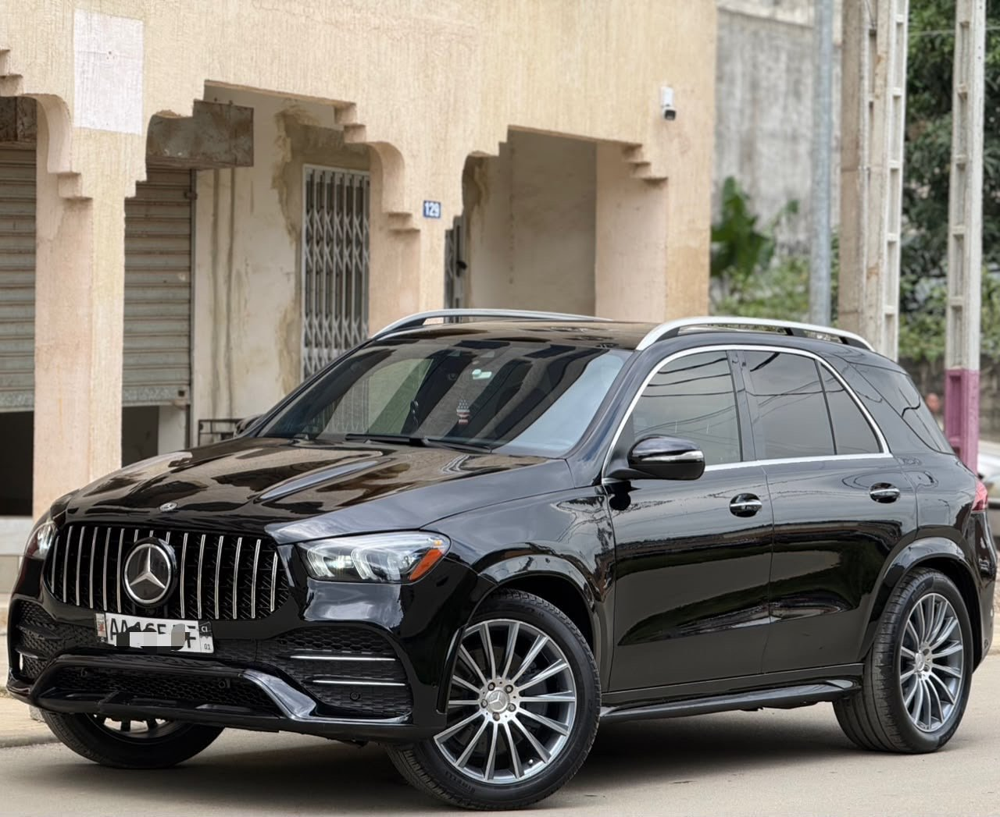

À vendre
Mercedes GLE 350 4MATIC 2021/2022
2021/2022 · Essence · Automatique · 4MATIC
28 000 000 FCFA TTC
Année annoncée2021/2022
VersionGLE 350 4MATIC
BoîteAutomatique
CarburantEssence
Cylindres4
DémarrageStart/Stop
IntérieurCuir noir
StationnementCapteurs de proximité
Alerte de franchissement de ligneOui
Caméra360°
Affichage tête hauteOui
ClimatisationD’origine
CoffreÉlectrique
SiègesÉlectriques
Charge à inductionOui
Intérieur cuir noir propre, démarrage Start/Stop, caméra 360°, affichage tête haute, capteurs de stationnement et de proximité, alerte de franchissement de ligne et climatisation d’origine.
Coffre et sièges électriques, charge à induction.
Contactez TVB CI AUTO pour les informations, la position du véhicule et une visite.